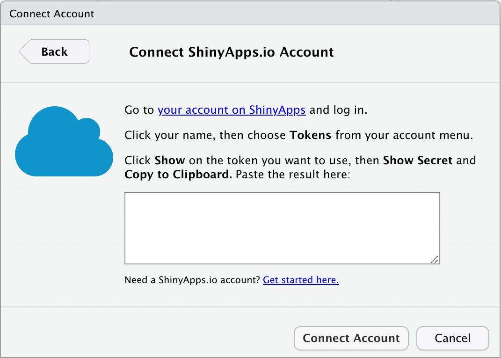

11 Sharing your Apps
11.1 shinyapps.io

- Open
Tools > Global Options ... - Go to the
Publishingtab - Click the
Connectbutton and choose ShinyApps.io - Click on the link to go to your account
- Click the
Sign Upbutton andSign up with GitHub - You should now be in your shinyapps.io dashboard; click on your name in the upper right and choose
Tokens - Add a token
- Click
Shownext to the token and copy the text to the clipboard
- Go back to RStudio and paste the text in the box and click
Connect Account - Make sure the box next to “Enable publishing…” is ticked, click
Apply, and close the options window ˙ You can test this by creating a simple app. If you have the shinyintro package, use the code below.
shinyintro::clone("input_demo", "mytestapp")
Open the app.R file and go to File > Publish... in the menu (or click on the blue icon in the upper right corner of the source pane). Make sure these are the right files for your app, edit the title if you want, and click Publish. A web browser window will open after a few seconds showing your app online! You can now share it with your friends and colleagues.
If publishing fails, check the Console pane. If you already have too many apps on shinyapps.io, you’ll see the message, “You have reached the maximum number of applications allowed for your account.” You can archive some of your apps from the shinyapps.io dashboard if this is the problem.
11.2 Self-hosting a shiny server
Setting up a shiny server is beyond the scope of this class, but if you have access to one, you can ask the administrator how to access the correct directories and upload your app directories there.
This solution is good if you want to save data locally and do not want to use Google Sheets. You can’t save data locally on shinyapps.io.
If you save data locally on a shiny server, you may need to change the owner or permissions of the directory you save data in so that the web user can write to it. Ask the administrator of the server for help if this doesn’t make any sense to you.
11.3 GitHub
GitHub is a great place to organise and share your code using version control. You can also use it to host Shiny app code for others to download and run on their own computer.
See Appendix B for instructions on how to set up git and a GitHub account. Set up a github access token with usethis::create_github_token(). Your web browser will open and you’ll be asked to log into your GitHub account and then asked to authorise a new token. Accept the defaults and click OK at the bottom of the page. In RStudio, run gitcreds::gitcreds_set() and follow the instructions to save the token.
Then, to share an app with people who use R, make a project that contains your app.R file and any related files. If you aren’t already using version control for this project, make sure all of your files are saved and type usethis::use_git() into the console. Choose Yes to commit and Yes to restart R.
Make a new GitHub repository with usethis::use_github(protocol=“https”); check that the suggested title and description are OK. If you choose the affirmative response (not always the same number), you’ll see some messages and your web browser will open the github repository page.
Now you can share your app with others by sending them the repository link. They can access your repository in RStudio by starting a New Project... from version control, using the URL that is shown when you click on the green Code button on the repository page (something like “https://github.com/account/repository.git”). They can run your app the same way you do when developing it, by opening the app.R file and clicking the Run button.
To update your files on GitHub, you need to commit any changes you make using the Git tab in the upper right pane. Click on the checkbox of any files you want to update, click Commit, and write a message to yourself explaining the changes (this will be publicly viewable on GitHub, so try to be professional, but you can use emojis 😱🤪😍).
Committing just creates a snapshot of the files on your computer so you can look at previous versions. To update the files on GitHub, you need to push the updates using the green up arrow button.
Git and GitHub can be tricky. Happy Git with R by Jenny Bryan is a fantastic in-depth book anbout how to work with git in R and RStudio.
11.4 In an R package
You can put your app in a custom R package to make it even easier for people to run the app. The usethis package is incredibly helpful for setting up packages.
mypackagename <- "mypackagename" # change this
usethis::create_package(mypackagename)
usethis::use_ccby_license()
# add packages your app uses
usethis::use_package("shiny")
usethis::use_package("shinydashboard")
# add the directory for your apps
dir.create("inst")
dir.create("inst/apps")Copy any apps you want to include in this package into the inst/apps directory.
Now, create the app function by running usethis::edit_file("R/app.R") and copy the following text into the app.R file that just opened. Replace "default_app" with the directory name of the app that you want to open if a user doesn’t type any name in at all.
#' Launch Shiny App
#'
#' @param name The name of the app to run
#' @param ... arguments to pass to shiny::runApp
#'
#' @export
#'
app <- function(name = "default_app", ...) {
appDir <- system.file(paste0("apps/", name), package = "mypackagename")
if (appDir == "") stop("The shiny app ", name, " does not exist")
shiny::runApp(appDir, ...)
}Next, open the DESCRIPTION file and edit the title, author and description. Now run the following code in the console.
devtools::document()
devtools::install()This will create the help documentation for your package function and install the package on your computer. You should now be able to run your app with mypackagename::app().
Set up git and save your package to GitHub to share it with others:
usethis::use_git()
usethis::use_github(protocol="https")Once it’s uploaded to GitHub, other people can install it with the following code:
devtools::install_github("myaccountname/mypackagename")11.5 Exercises
11.5.1 Shinyapps.io
- Upload a cloned demo app to shinyapps.io
- Check that you can access it online
- Archive the app in the shinyapps.io dashboard
11.5.2 GitHub
- Set up a GitHub account
- Create a New Project in RStudio from version control using https://github.com/debruine/demoapp
- Create a project that contains a demo app and upload it to GitHub.
11.5.3 R Package
- Create an R package for a demo app and upload it to GitHub.
11.6 Your App
How will users need to access your app? Will they be R users who can download it and run it on their own computers? Or will you need to find a host online? Choose and implement a sharing method for your custom app. Send a friend (or your instructor) directions to access and run it.